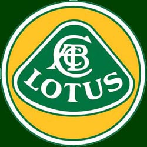
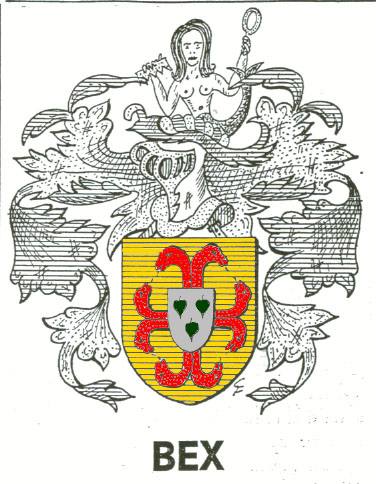
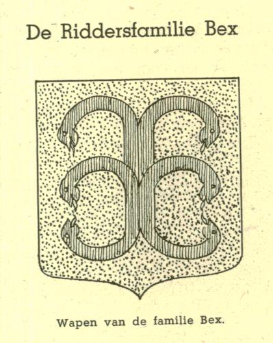
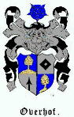

This site contains information about: Lotus/Caterham
Seven and
The Family-tree of
Bex, Herings, Oberhoff(f)/Overhoff(f) and Vromen/Vroomen/Vroemen
Ancestors from Vincent to the Roman Emperor Augustus and Charlemagne/Karel de Grote
|
|
 |  |  |